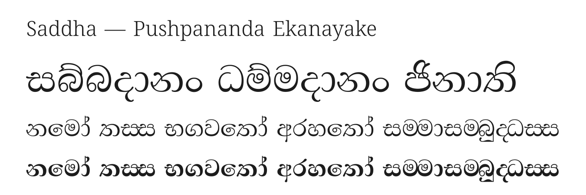

Saddha (සද්ධා, Pali for confidence or faith) is a Sinhala text typeface by Pushpananda Ekanayake. It is a variable font with a weight axis from Regular to ExtraBold, interpolating between the designer's own Regular and Bold drawings.
Saddha is intended for running text in books, documents and on screen, and its range of weights supports headings and emphasis within the same family.

The fonts are Unicode conversions of designs Pushpananda Ekanayake made for a legacy (pre-Unicode) encoding, released under the SIL Open Font License with his written agreement. Their glyph set and Sinhala OpenType shaping come from Abhaya Libre, so they render conjuncts, touching letters (bandi akuru), rakaransaya, yansaya and repaya, and the forms used in Pali texts such as ම්බ ණ්ඩ ඤ්ච. The Latin is adapted from the Noto project and includes the letters of Pali romanisation (ā ī ū ṃ ṅ ñ ṭ ḍ ṇ ḷ).
Pushpananda Ekanayake has designed Sinhala typefaces since the 1990s, and his fonts are widely used in Sri Lankan publishing.
To contribute, see github.com/pnfo/sinhala-unicode-fonts.